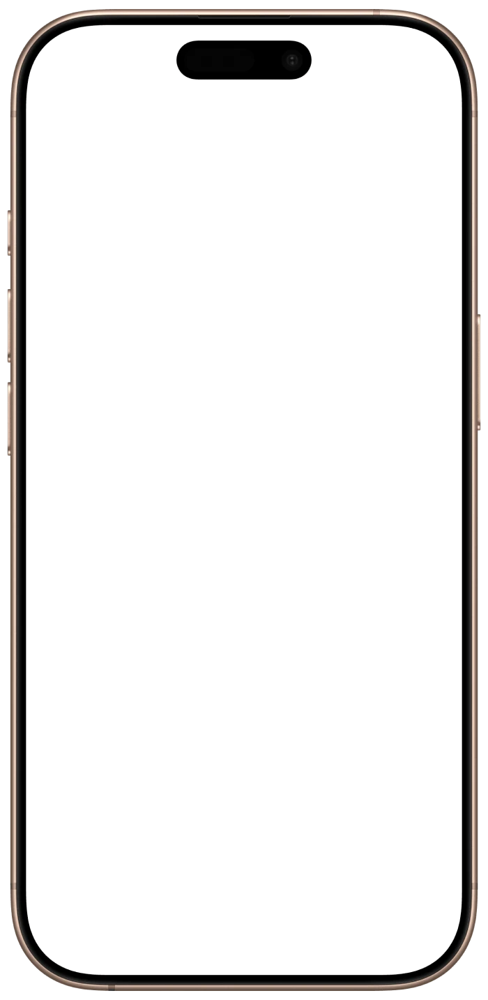
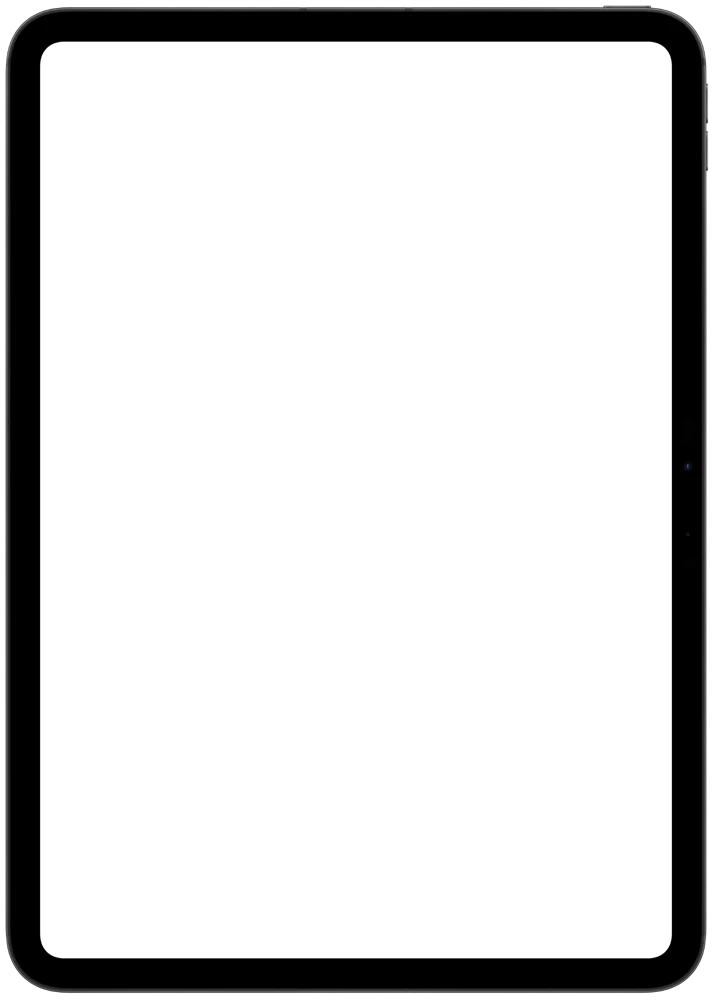

Human-made

Color Theory
An interactive game that teaches the fundamentals of color theory.
 View on GitHub ↗
View on GitHub ↗


An interactive game that teaches the fundamentals of color theory.
View on GitHub ↗

View on GitHub ↗

5+ yearsas an iOS developer
Arizona State University
GPA 3.79/4.00

IQVIA
Jul 2021 – Apr 2024

Salesforce
Apr 2024 – Present Now